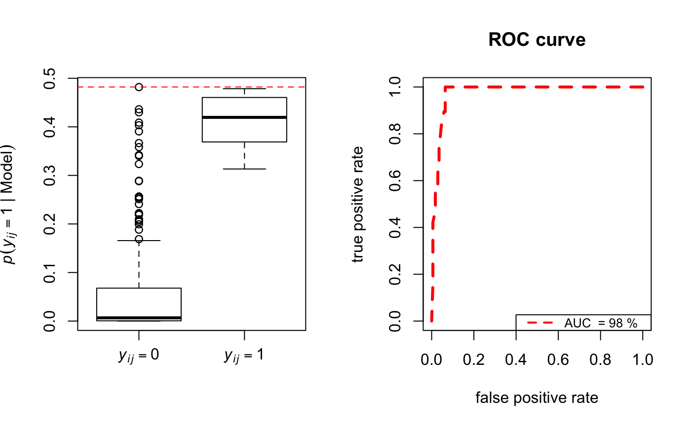

Function to display boxplots and ROC curves to show model fit in terms of in-sample link prediction.
boxroc(Y, EZ, xiT, BOXPLOT = FALSE, ROC = FALSE, Lroc = 100, labelsPlot = NULL, powdist = 2, cexRocLeg = 0.8, colRoc = seq(2, Ndata + 1), ltyRoc = seq(2, Ndata + 1), lwdRoc = 2, ...)
| Y | ( |
|---|---|
| EZ | ( |
| xiT | vector of posterior means of the parameter \(\alpha\) |
| BOXPLOT | logical; if |
| ROC | logical; if |
| Lroc | number of intervals in the ROC curve. Default |
| labelsPlot | main title for the boxplot. Default |
| powdist | vector of power of the distance default |
| cexRocLeg |
|
| colRoc |
|
| ltyRoc |
|
| lwdRoc |
|
| ... | Arguments to be passed to methods, such as graphical parameters (see |
The area under the ROC curve (AUC) and the selected plots. The closer the AUC takes values to 1 the better the fit.
Gollini, I., and Murphy, T. B. (2016), 'Joint Modelling of Multiple Network Views', Journal of Computational and Graphical Statistics, 25(1), 246-265 http://arxiv.org/abs/1301.3759.
N <- 20 Y <- network(N, directed = FALSE)[,] modLSM <- lsm(Y, D = 2) bp <- boxroc(Y, EZ = modLSM$lsmEZ, xiT = modLSM$xiT, Lroc = 150, ROC = TRUE, BOXPLOT = TRUE)#> [1] 0.9766082print(bp)#> $AUC #> [1] 0.9766082 #> #> $statsboxplot #> $statsboxplot[[1]] #> [,1] [,2] #> [1,] 0.0000000000 0.3132298 #> [2,] 0.0005709753 0.3689158 #> [3,] 0.0067040780 0.4195257 #> [4,] 0.0677938491 0.4604811 #> [5,] 0.1657144271 0.4785512 #> #>